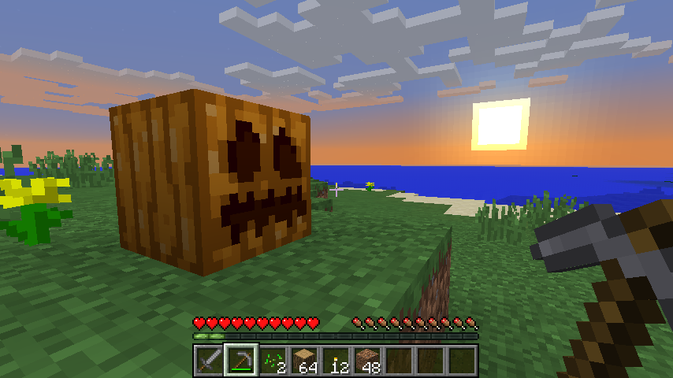

Welcome to the Bot Challenge.
Minecraft is a great example of how in everyday life we have to do some boring repetitive tasks, something a robot could do. Since our world and jobs are going to gradually be replaced with robots and computers, learning to take our every day tasks and break them down into step-by-step computer programs is going to be a valuable skill. Here's your chance to play Minecraft and practice your Python coding at the same time.
Meet your robot buddy, he looks just like a pumpkin but you can program him to mine and build for you while you play.
What you need
- A little bit of Python experience (just the basics)
- A regular Minecraft account (from http://minecraft.net)
- A computer with Minecraft installed and an internet connection
Note that this is not a modification to your Minecraft client, we've modified the server only so you don't need to mess around with mods unless you want to run your own server. You'll only need to install standard Python and a couple of extra Python modules, but we've got instructions for that below.
Setting up
Check out these instructions for Windows, Mac OSX or Linux.
How it works
On our multiplayer Minecraft server, we've added a plugin. This plugin lets you spawn a pumpkin bot, and allows you to connect to the server from your Python client and send commands to the pumpkin bot. Apart from this, the server is a regular Minecraft server. You can set up your own server by checking out the source code from the github repo and building the plugin yourself.
To get an idea what the Python client can do, check out the examples folder.